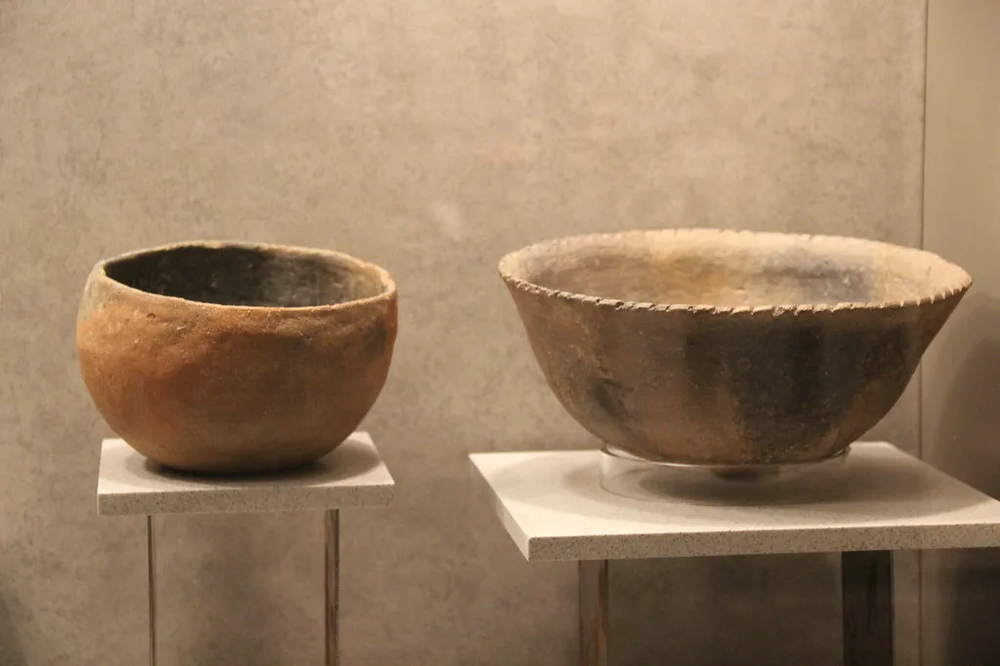
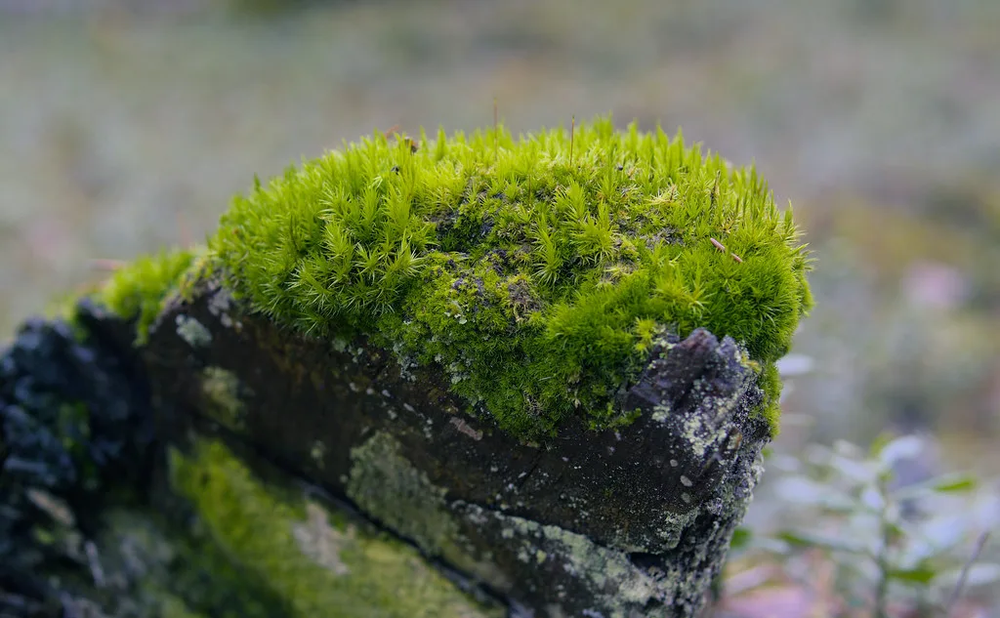
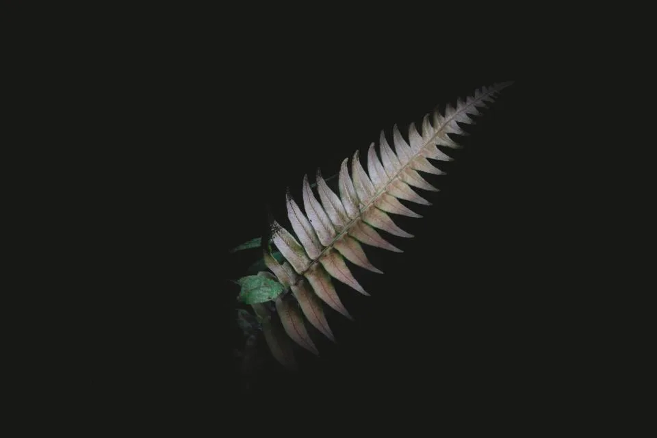
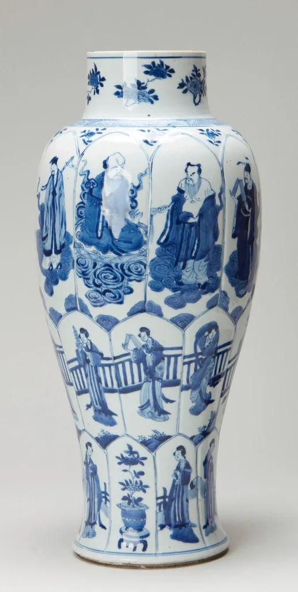
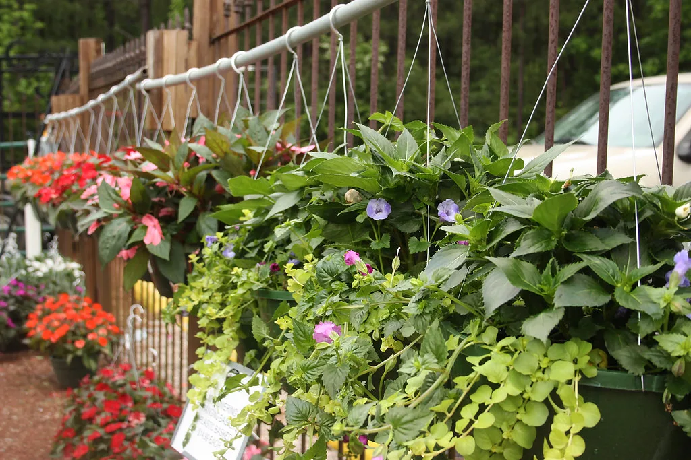
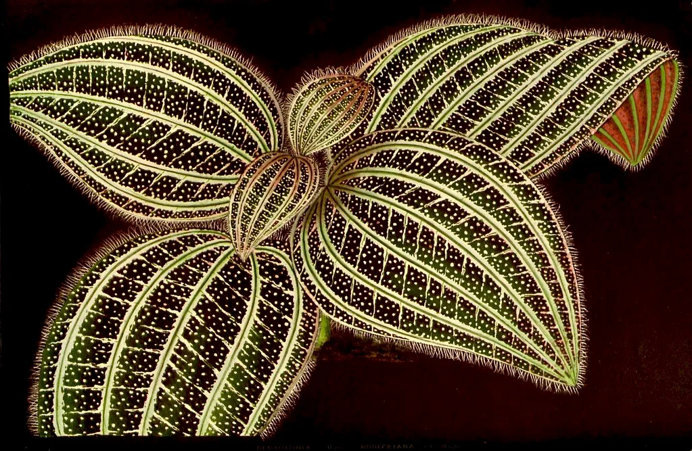
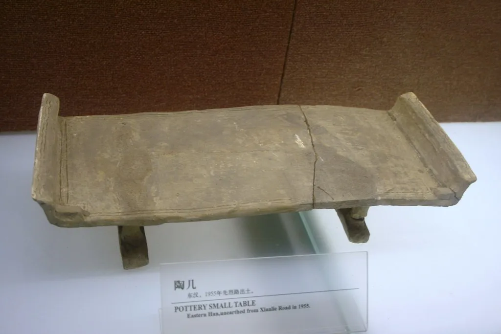
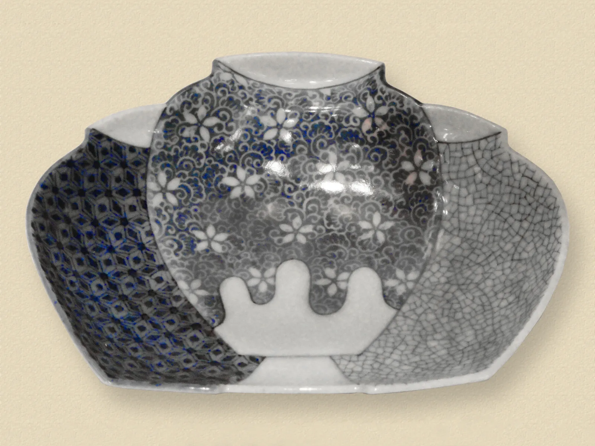
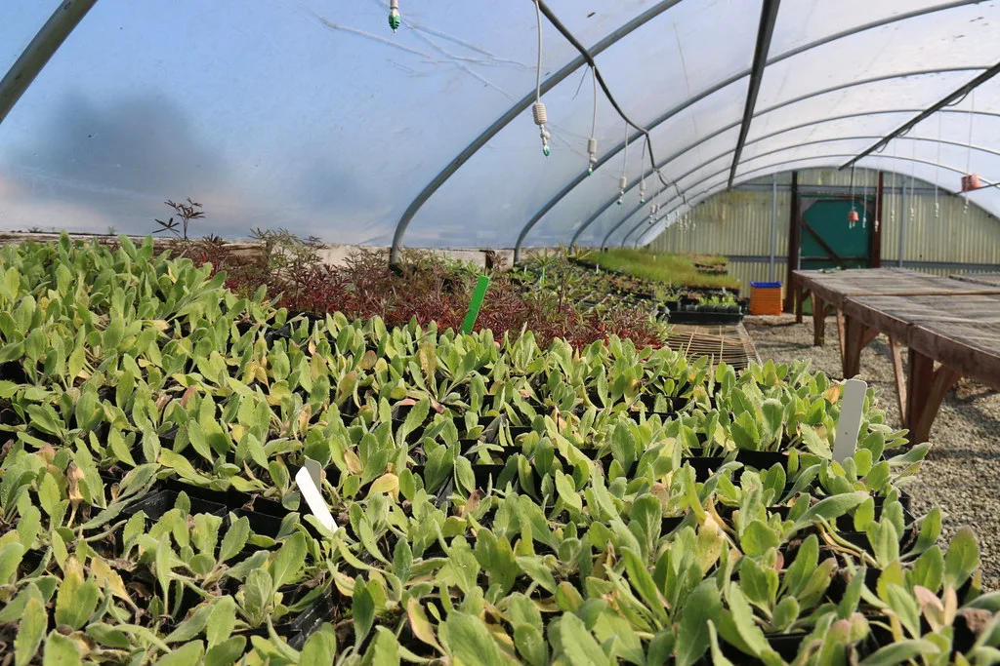

화분과 그 안에 들어갈 식물을 같이 정합니다.

둥근 발 화분 물레 · 백자토 바닥을 띄워 물이 고이지 않게 했습니다.
이끼 상자 석기토 · 무유 뚜껑 없이 습도를 유지하는 얕은 상자.
고사리 전용 화분 물레 · 산화 소성 뿌리가 옆으로 뻗는 종을 위해 넓고 얕게.
유약 시험판 40장 유약 연구 같은 유약을 두께만 바꿔 구웠습니다.
걸이 화분 핸드빌딩 천장에 매다는 가벼운 화분.
식물 상담 기록 아카이브 집 구조를 듣고 식물을 고릅니다.
테이블 오브제 조합 작업 화분과 식물을 한 벌로 냅니다.
가마 일지 기록 매 소성의 온도 곡선을 남깁니다.식물을 먼저 정하고 화분을 맞추는 편이 훨씬 쉽습니다. 반대로 하면 대개 물이 문제가 됩니다.
뿌리가 아래로 뻗는 종은 깊고 좁게, 옆으로 뻗는 종은 얕고 넓게. 이 두 가지만 지켜도 대부분 삽니다.
재고를 두지 않습니다. 만든 만큼만 내고, 다 나가면 다음 가마를 기다립니다.

작업실은 늘